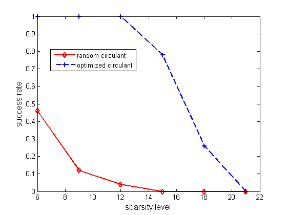

Contents
clear; close all;
rand('state',2013); randn('state',2013);
m = 64;
n = 512;
testnum = 50;
Psi = dftmtx(n)/sqrt(n);
suc = zeros(2,6);
for k = 6:3:21
for num = 1:testnum
generate a sparse signal
xs = zeros(n,1);
xs(randsample(n,k)) = randn(k,1);
xs = xs/norm(xs);
xstart = randn(n,1);
generate a random circulant matrix
v = randn(1,n)+1i*randn(1,n);
C = gallery('circul',v);
p = randperm(n);
Phi = C(p(1:m),:);
for i=1:n
Phi(:,i) = Phi(:,i)/norm(Phi(:,i));
end
A = Phi*Psi; b = A*xs;
opts = []; opts.tol = 5e-8; opts.x0 = xstart;
x = yall1(A,b,opts);
if norm(x-xs)/norm(xs) < 1e-4
suc(1,k/3-1) = suc(1,k/3-1)+1;
end
learn circulant matrix
F = dftmtx(n)/sqrt(n);
B = F'*Psi*Psi'*F; Bsq = B.*conj(B); dB = diag(B);
Bsq = (Bsq+Bsq')/2;
quadopts = optimset('Algorithm','active-set',...
'Display','off');
dsq = quadprog(Bsq,-dB,[],[],[],[],zeros(n,1),[],[],quadopts);
d = sqrt(dsq).*exp(2*1i*pi*rand(n,1));
C = F*diag(d)*F';
Phi = C(p(1:m),:);
for i=1:n
Phi(:,i) = Phi(:,i)/norm(Phi(:,i));
end
A = Phi*Psi; b = A*xs;
opts = []; opts.tol = 5e-8; opts.x0 = xstart;
x = yall1(A,b,opts);
if norm(x-xs)/norm(xs) < 1e-4;
suc(2,k/3-1) = suc(2,k/3-1)+1;
end;
end
end
Reporting
suc = suc/testnum;
plot(6:3:21,suc(1,:),'r-d','linewidth',2)
hold on;
plot(6:3:21,suc(2,:),'b--+','linewidth',2)
legend('random circulant','optimized circulant','location','best');
xlabel('sparsity level','fontsize',12);
ylabel('success rate','fontsize',12);
